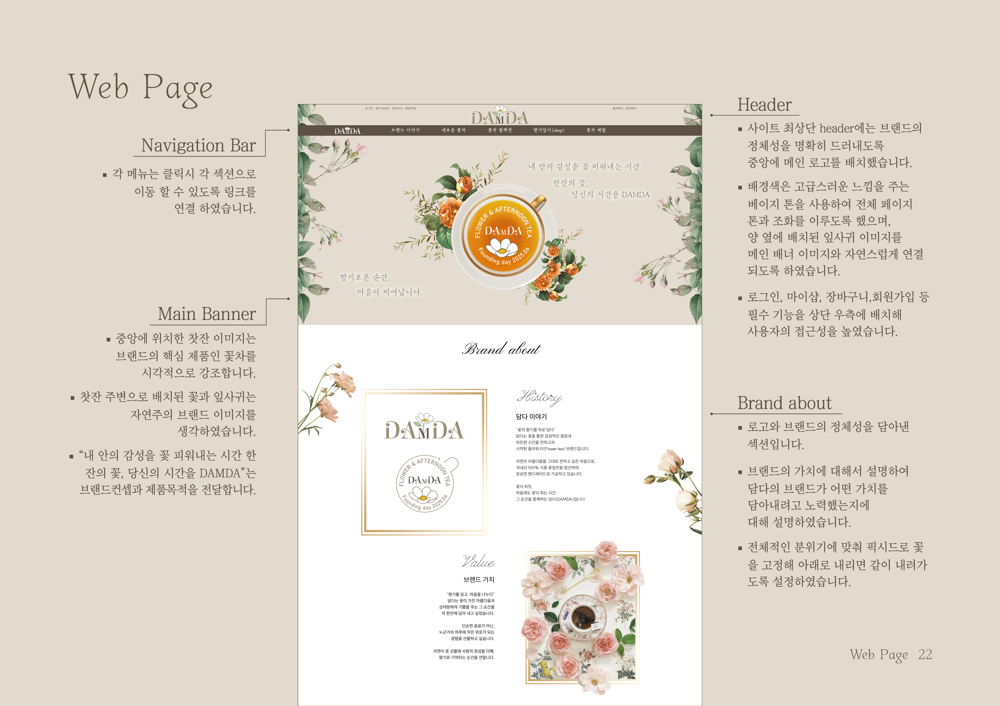
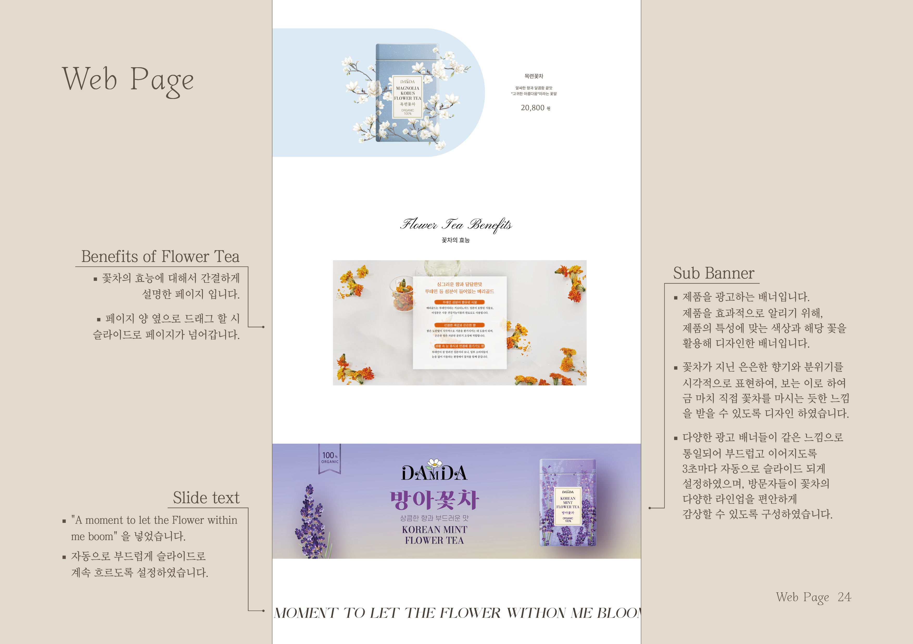
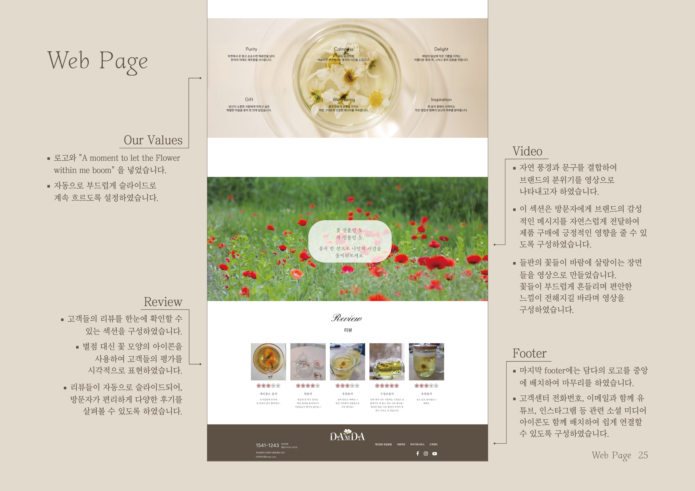

<body>
    <!DOCTYPE html>
    <html lang="ko">

    <head>
        <meta charset="UTF-8">
        <meta http-equiv="X-UA-Compatible" content="IE=edge">
        <meta name="viewport" content="width=device-width, initial-scale=1.0">
        <title>UI&UX</title>
        <!--2. 연결 시켜야 할 파일을 연결 시킨다. 복사해서 head안에 본인 css파일 위에 위치 시킨다.-->
        <link rel="stylesheet" href="https://cdn.jsdelivr.net/npm/swiper@11/swiper-bundle.min.css">
        <script src="https://unpkg.com/swiper/swiper-bundle.min.js"></script>
        <link rel="stylesheet" href="https://unpkg.com/swiper/swiper-bundle.min.css" />
        <link rel="icon" type="image/png" sizes="32x32" href="./img/favicon.png">

        <!--내가 만든 css파일이 가장 밑에 오게끔 해주세요!-->
        <link rel="stylesheet" href="./css/style.css">
    </head>

    <div id="news">
        <!--마진오토-->
        <div class="swiper card"><!--swiper는 필수 클래스, 그 옆의 클래스는 보조 클래스-->
            <div class="swiper-wrapper"><!--swiper-wrapper는 필수 클래스-->
                <div class="swiper-slide">
                    <!--swiper-slide는 필수 클래스-->
                    
                </div>
                <div class="swiper-slide">
                    
                </div>
                <div class="swiper-slide">
                    
                </div>
                <div class="swiper-slide">
                    
                </div>
                <div class="swiper-slide">
                    
                </div>
                <div class="swiper-slide">
                    
                </div>
                <div class="swiper-slide">
                    
                </div>
            </div><!--mb E-->

            <!--도트를 추가하고 싶을때-->
            <div class="swiper-pagination"></div>
            <!--화살표추가-->
            <div class="swiper-button-next"></div>
            <div class="swiper-button-prev"></div>

        </div> <!-- card -->
    </div><!--news-->

    <!--3. 필수 옵션을 넣는 script부분을 body가장 끝에 넣어준다.-->
    <!-- Initialize Swiper --><!--옵션부분 pdf파일 참조해주세요-->

    <!-- Swiper JS -->
    <script src="https://cdn.jsdelivr.net/npm/swiper@11/swiper-bundle.min.js"></script>
    <script src="./script/script.js"></script>
</body>

</html>